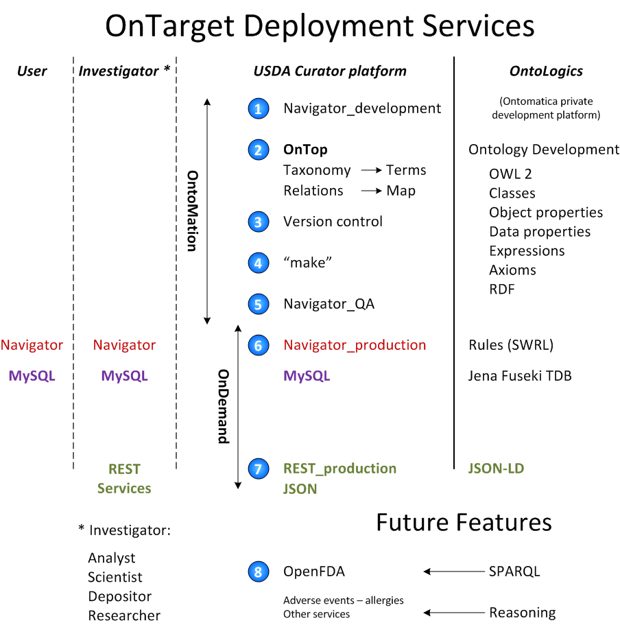

Deployment Services¶
This section addresses:
-
:Ontomatica defined objective:¶
Table of Contents¶
OnTarget¶
OntoMation manages the promotion of application content: - from development (1) - to quality assurance (5) - to production (6 and 7).
Versioning¶
Description about GitHub (3)
make++¶
Description (4)
#!/usr/bin/env python
# This script processes the entries in nobel.txt to produce the files
# needed to create a Navigator instance.
attrnames = [line.split('\t')[0] for line in open('attrs.tsv')]
facetnames = [line.split('\t')[0] for line in open('facets.tsv')]
facets = dict([(name, []) for name in facetnames])
maps = dict([(name, []) for name in facetnames])
items, nameitems = {}, {}
texts = {}
# First, collect all the facet values and items.
fields, categories, text = {}, [], ''
for line in open('nobel.txt'):
if line.strip():
name, values = line.split(':', 1)
values = values.strip()
if name == 'year':
values += ', ' + values[:3] + '0s' # group years by decade
if name in facetnames:
chunks = values.split('(')
for i in range(1, len(chunks)):
chunks[i] = chunks[i].split(')', 1)[-1]
values = ''.join(chunks)
for value in values.split(';'):
text += ' ' + value.replace(',', ' ')
path = [segment.strip() for segment in value.split(',')]
path.reverse()
path = tuple(path)
if name == 'affiliation' and len(path) == 1:
continue
if path not in facets[name]:
facets[name].append(path)
categories.append((name, path))
if name in attrnames:
text += ' ' + values
fields[name] = values
elif fields:
if fields['name'] in nameitems:
item = nameitems[fields['name']]
items[item].update(fields)
texts[item] += text
else:
item = len(items) + 1
items[item], texts[item] = fields, text
nameitems[fields['name']] = item
for name, path in categories:
maps[name].append((item, path))
fields, categories, text = {}, [], ''
# Then write the facet tables, generating ids as we go.
for name in facetnames:
facets[name].sort()
pathids = {}
file = open('%s_terms.tsv' % name, 'w')
lastid = 0
for path in facets[name]:
for i in range(1, len(path) + 1):
subpath = path[:i]
if subpath not in pathids:
pathids[subpath] = lastid = lastid + 1
file.write('%d\t%s\n' % (lastid, '\t'.join(subpath)))
file.close()
file = open('%s_map.tsv' % name, 'w')
for item, path in maps[name]:
file.write('%d\t%d\n' % (item, pathids[path]))
file.close()
# Write the table of items.
file = open('items.tsv', 'w')
itemids = items.keys()
itemids.sort()
for item in itemids:
fields = []
for name in attrnames:
fields.append(items[item].get(name, ''))
file.write('%d\t%s\n' % (item, '\t'.join(fields)))
file.close()
# Finally, write the text associated with each item.
file = open('text.tsv', 'w')
for item in itemids:
file.write('%d\t%s\n' % (item, ' '.join(texts[item].split())))
file.close()
OntoLogics¶
Ontomatica’s OntoLogics services are not part of Proposal.